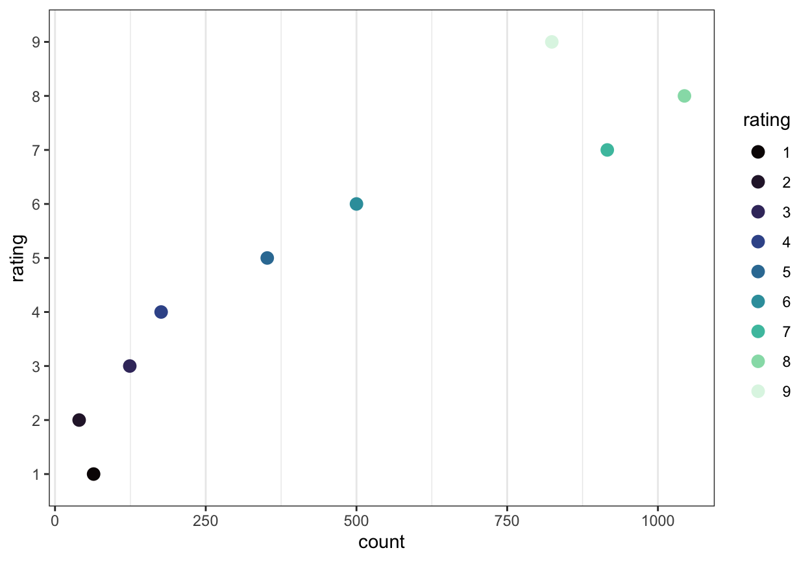
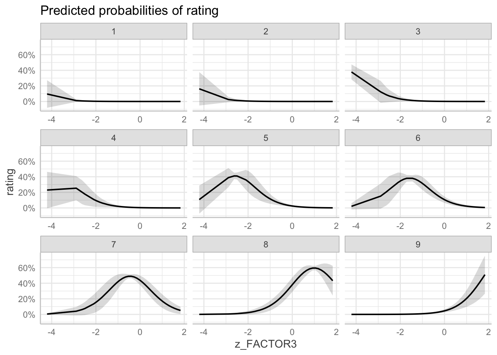

Week 20. Workbook introduction to Ordinal (Mixed-effects) Models
Written by Rob Davies
Week 20 Introduction to Ordinal (Mixed-effects) Models
Welcome to your overview of the work we will do together in Week 20.
We extend our understanding and skills by moving to examine data where the outcome variable is categorical and ordered: this is a context that requires the use of a class of Generalized Linear (Mixed-effects) Models (GLMMs) usually known as ordinal models.
Ordinal data are very common in psychological science.
Often, we will encounter ordinal data recorded as responses to Likert-style items in which the participant is asked to indicate a response on an ordered scale ranging between two end points (Bürkner & Vuorre, 2019; Liddell & Kruschke, 2018). An example of a Likert item is: How well do you think you have understood this text? (Please check one response) where the participant must respond by producing a rating, by checking one option, given nine different response options ranging from 1 (not well at all) to 5 (very well).
The critical characteristics of ordinal data values (like the responses recorded to ratings scale, Likert-style, items) are that:
The responses are discrete or categorical — you must pick one (e.g., 1), you cannot pick more than one at the same time (e.g., 1 and 2), and you cannot have part or fractional values (e.g., you can’t choose the rating 1.5).
The responses are ordered — ranging from some minimum value up to some maximum value (e.g., 1\(\rightarrow\)2\(\rightarrow\)3\(\rightarrow\)4\(\rightarrow\)5).
Ordinal data can come from a variety of possible psychological mechanisms or processes. We are going to focus on data comprising responses recorded to ratings scale Likert-style items. But ordinal data can also reflect processes in which participants have worked their way through a progression or sequence of decisions (see, e.g., Ricketts et al., 2021).
Important
Observed ordinal outcome values, responses like ratings, look like numbers but it is best to understand these ordinal data values as numeric labels for ordered categorizations.
What the different categories correspond to — what dimension, or what data generating processing mechanism — depends on your psychological theory for the processes that drive response production for the task you constructed to collect or observe your data.
The challenge we face is that we will aim to develop skills in using ordinal models when, in contrast, most psychological research articles will report analyses of ordinal data using conventional methods like ANOVA or linear regression. We will work to understand why ordinal models are better. We will learn that applying conventional methods to ordinal data will, in principle, involve a poor account of the data and, in practice, will create the risk of producing misleading results. And we will learn how to work with and interpret the results from ordinal models with or without random effects.
In our work, we will rely extensively on the ideas set out by Bürkner & Vuorre (2019) and Liddell & Kruschke (2018).
Targets
Here, we look at ordinal models: we can use these models to analyze outcome variables of different kinds, including outcome variables like ratings responses that are coded using discrete and ordered categories (e.g., how well you think you have understood something, on a scale from 1 to 9).
This workbook introduction on ordinal models is linked to the corresponding conceptual introduction chapter where the explanation of ideas or of practical analysis steps is set out more extensively or in more depth.
Practical materials: data and R-Studio
We will be working with a sample of data collected as part of work in progress, undertaken for Clearly understood: health comprehension project (Davies and colleagues).
Warning
These data are unpublished so should not be shared without permission.
Our interest, in conducting the project, lies in identifying what factors make it easy or difficult to understand written health information (health texts).
It is common, in the quality assurance process in the production of health information texts, that text producers ask participants in patient review panels to evaluate draft texts. In such reviews, a participant may be asked a question like “How well do you understand this text?” This kind of question presents a metacognitive task: we are asking a participant to think about their thinking. But it is unclear that people can do this well or, indeed, what factors determine the responses to such questions (Dunlosky & Lipko, 2007).
We conducted studies in which we presented adult participants with sampled health information texts and asked them to respond to the question:
How well do you think you have understood this text?
For each text, in response to this question, participants were asked to click on one option from an array of response options ranging from 1 (Not well at all) to 9 (Extremely well).
The data we collected in this element of our studies comprise, clearly, ordinal responses:
We are asking participants to reflect on their understanding of the information in health texts.
We are asking them to translate their evaluation of their own understanding into a response.
The permitted response options are discrete or categorical — you must pick one (e.g., 1), you cannot pick more than one at the same time (e.g., 1 and 2), and you cannot have part or fractional values (e.g., you can’t choose the rating 1.5).
The permitted responses are ordered, ranging from some minimum value up to some maximum value (e.g., 1\(\rightarrow\)2\(\rightarrow\)3\(\rightarrow\)4\(\rightarrow\)5\(\rightarrow\)...), so that if a participant picks a higher response value, they are (in our theory of the task) choosing to signal a higher level of understanding.
Important
Get the data: get the data file you can use to do the exercises that will support your learning.
You can download the 2021-22_PSYC304-health-comprehension.csv file holding the data we analyse in the practical exercises, shown following, by clicking on the link.
we collected these data to address the following research question.
What factors predict self-evaluated rated understanding of health information.
Understand through practical experience the reasons for using ordinal models when we analyze ordinal outcome variables.
Practice running ordinal models with varying random effects structures.
Practice reporting the results of ordinal models, including through the use of prediction plots.
We are going to focus on working with Cumulative Link Models (CLMs) and Cumulative Link Mixed-effects Models (CLMMs) in R (Christensen, 2015; Christensen, 2022).
My recommendations for learning are that you should aim to:
run CLMs or CLMMs of demonstration data;
run CLMs or CLMMs of the alternate data sets that I reference, or with your own ratings data;
play with the .R code used to create practical exercises;
and edit example code to create alternate visualizations.
The practical exercises
Now you will progress through a series of tasks, and challenges, to aid your learning.
Warning
We will work with the data file:
2021-22_PSYC304-health-comprehension.csv
We again split the steps into into parts, tasks and questions.
We are going to work through the following workflow steps: each step is labelled as a practical part.
Set-up
Load the data
Tidy data
Analyze the data: working with Cumulative Link Models
Analyze the data: working with Cumulative Link Mixed-effects Models
Presenting and visualizing the effects
Different kinds of ordinal data
In the following, we will guide you through the tasks and questions step by step.
Important
An answers version of the workbook will be provided after the practical class.
Practical Part 1: Set-up
To begin, we set up our environment in R.
Practical Task 1 – Run code to load relevant libraries
Use the library() function to make the functions we need available to you.
Practical Task 2 – Read in the data file we will be using
Read the data file into R:
Code
health <-read_csv("2021-22_PSYC304-health-comprehension.csv", na ="-999",col_types =cols(ResponseId =col_factor(),rating =col_factor(),GENDER =col_factor(),EDUCATION =col_factor(),ETHNICITY =col_factor(),NATIVE.LANGUAGE =col_factor(),OTHER.LANGUAGE =col_factor(),text.id =col_factor(),text.question.id =col_factor(),study =col_factor() ) )
You can see, here, that within the read_csv() function call, I specify col_types, instructing R how to treat a number of different variables.
You can read more about this convenient way to control the read-in process here.
Practical Part 3: Tidy the data
The data are already tidy: each column in long.orth_2020-08-11.csv corresponds to a variable and each row corresponds to an observation. However, we need to do a bit of work, before we can run any analyses, to fix the coding of the categorical predictor (or independent) variables: the factors Orthography, Instructions, and Time.
Practical Task 3 – Inspect the data: look at the data-set
It is always a good to inspect what you have got when you read a data file in to R.
If you open the data-set .csv, you will see:
ResponseId
AGE
GENDER
EDUCATION
ETHNICITY
NATIVE.LANGUAGE
OTHER.LANGUAGE
ENGLISH.PROFICIENCY
SHIPLEY
HLVA
FACTOR3
rating
response
RDFKGL
study
text.id
text.question.id
R_sKW4OJnOlidPxrH
20
Female
Further
Asian
English
NA
NA
26
8
59
8
1
10.608
cs
studyone.TEXT.105
studyone.TEXT.105.CQ.1
R_sKW4OJnOlidPxrH
20
Female
Further
Asian
English
NA
NA
26
8
59
8
1
10.608
cs
studyone.TEXT.105
studyone.TEXT.105.CQ.2
R_sKW4OJnOlidPxrH
20
Female
Further
Asian
English
NA
NA
26
8
59
8
1
10.608
cs
studyone.TEXT.105
studyone.TEXT.105.CQ.3
R_sKW4OJnOlidPxrH
20
Female
Further
Asian
English
NA
NA
26
8
59
8
1
10.608
cs
studyone.TEXT.105
studyone.TEXT.105.CQ.4
R_sKW4OJnOlidPxrH
20
Female
Further
Asian
English
NA
NA
26
8
59
7
1
8.116
cs
studyone.TEXT.94
studyone.TEXT.94.CQ.1
R_sKW4OJnOlidPxrH
20
Female
Further
Asian
English
NA
NA
26
8
59
7
1
8.116
cs
studyone.TEXT.94
studyone.TEXT.94.CQ.2
R_sKW4OJnOlidPxrH
20
Female
Further
Asian
English
NA
NA
26
8
59
7
1
8.116
cs
studyone.TEXT.94
studyone.TEXT.94.CQ.3
R_sKW4OJnOlidPxrH
20
Female
Further
Asian
English
NA
NA
26
8
59
7
0
8.116
cs
studyone.TEXT.94
studyone.TEXT.94.CQ.4
R_sKW4OJnOlidPxrH
20
Female
Further
Asian
English
NA
NA
26
8
59
7
1
13.278
cs
studyone.TEXT.28
studyone.TEXT.28.CQ.1
R_sKW4OJnOlidPxrH
20
Female
Further
Asian
English
NA
NA
26
8
59
7
1
13.278
cs
studyone.TEXT.28
studyone.TEXT.28.CQ.2
You can use the scroll bar at the bottom of the data window to view different columns.
You can see the columns:
ResponseId participant code
AGE age in years
GENDER gender code
EDUCATION education level code
ETHNICITY ethnicity (Office National Statistics categories) code
NATIVE.LANGUAGE code whether English the native language
OTHER.LANGUAGE text indicating native language if not English
ENGLISH.PROFICIENCY self-rated English proficiency if native language not English
SHIPLEY vocabulary knowledge test score
HLVA health literacy test score
FACTOR3 reading strategy survey score
RDFKGL health text (Flesch-Kincaid Grade Level) readability
study study identity code
text.id health information text identity code
text.question.id health information text question identity code
The data are structured this way because:
Each participant was asked to read and respond to a sample of health information texts. Each health text is coded text.id. For each text, a participant was asked to respond to a set of multiple choice questions (MCQs) designed to probe their understanding. Each question is coded text.question.id. The accuracy of the response made by each participant to each queston about each text is coded correct (1) or incorrect (0) in the response column.
This data collection process means that, for each participant ID, you are going to see multiple rows of data, one row for each participant, each text they read, and each question they respond to.
In addition to the MCQs, each participant was asked to rate their understanding of the information in each text that they saw.
How well do you think you have understood this text? (Please check one response) where the participant must respond by producing a rating, by checking one option, given nine different response options ranging from 1 (not well at all) to 5 (very well).
Note that each participant was asked to produce only one rating for each health text that they saw. This means that in the data-set there is one rating response value, for each participant, for each text. This also means that the rating is repeated for each row, where different rows correspond to different MCQs, for each text.
As we have said, we are going to focus our analyses on the ordered ratings data. And, as noted, these rating responses are categorical and ordered: ranging across potential values, from 1\(\rightarrow\)2\(\rightarrow\)3\(\rightarrow\)4\(\rightarrow\)5\(\rightarrow\)6\(\rightarrow\)7\(\rightarrow\)8\(\rightarrow\)9.
Practical Task 4 – Inspect the data: visualize the ratings
The most important task is to assess the nature of the outcome ratings variable: what have we got?
Pract.Q.1. What is the frequency distribution of responses under each possible rating response value (or category): can you visualize the distribution?
Hint
There are different ways to assess the distribution of ratings responses.
We are going to ignore the fact that ratings are repeated within participants across question-rows for each text because we are primarily interested in the relative proportion of ratings responses recorded for different possible ratings.
We can focus on getting a count of the number of ratings responses recorded, for this sample of participants and texts, for each possible rating response value.
We can visualize the counts in different ways: you will have seen bar plots but we focus here on dot plots.
How would you de-duplicate the ratings data to get counts showing just the number of ratings (made by participants to texts) for each possible rating response value?
Produce a plot to visualize the distribution of ratings responses.
Code
health <- health %>%mutate(rating =fct_relevel(rating, sort))health %>%group_by(rating) %>%summarise(count =n()) %>%ggplot(aes(x = rating, y = count, colour = rating)) +geom_point(size =3) +scale_color_viridis(discrete=TRUE, option ="mako") +theme_bw() +theme(panel.grid.major.y =element_blank() # No horizontal grid lines ) +coord_flip()

Figure 1: Dot plot showing the distribution of ratings responses. The Likert-style questions in the surveys asked participants to rate their level of understanding of the texts they saw on a scale from 1 (not well) to 9 (extremely well). The plot shows the number of responses recorded for each response option, over all participants and all texts.
Pract.Q.2. What does the plot show us?
Hint
In analyzing these data, we will seek to estimate what information available to us can be used to predict whether a participant’s rating of their understanding is more likely to be, say, 1 or 2, 2 or 3 … 7 or 8, 8 or 9.
Practical Task 5 – Inspect the data: examine the ordered and categorical nature of the ratings responses
As explained, when we do analyses using ordinal models, we expect to work with categorical and ordered outcome response values. We know that, given the study and task design, that the ratings responses should be treated as ordered and categorical data but we need to check that R agrees that the ratings data are ordered and categorical.
Pract.Q.3. How can we tell that R treats values in the outcome rating column as ordered and categorical data?
Hint
Just because the data-set looks to us like values in the outcome rating column are ordered and categorical does not mean that R sees the values as we would prefer it to.
We can try to identify how R classifies values in the rating column using the summary() function we have been using.
We can try a different function: str().
Pract.Q.4. What does a summary of the data-set show us?
Code
summary(health)
ResponseId AGE GENDER
R_sKW4OJnOlidPxrH: 20 Min. :18.0 Female :2900
R_27paPJzIutLoqk8: 20 1st Qu.:20.0 Male :1120
R_1nW0lpFdfumlI1p: 20 Median :27.0 Prefer-not-to-say: 20
R_31ZqPQpNEEapoW8: 20 Mean :34.3
R_2whvE2IW90nj2P7: 20 3rd Qu.:50.0
R_3CAxrri9clBT7sl: 20 Max. :81.0
(Other) :3920
EDUCATION ETHNICITY NATIVE.LANGUAGE OTHER.LANGUAGE
Further :1780 Asian: 680 English:2720 NA :2720
Higher :1800 White:3260 Other :1320 Polish : 580
Secondary: 460 Other: 40 Cantonese : 280
Mixed: 60 Chinese : 120
Portuguese: 60
polish : 60
(Other) : 220
ENGLISH.PROFICIENCY SHIPLEY HLVA FACTOR3
Length:4040 Min. :15.00 Min. : 3.000 Min. :17.00
Class :character 1st Qu.:30.00 1st Qu.: 7.000 1st Qu.:45.00
Mode :character Median :34.00 Median : 9.000 Median :49.00
Mean :32.97 Mean : 8.564 Mean :49.03
3rd Qu.:37.00 3rd Qu.:10.000 3rd Qu.:55.00
Max. :40.00 Max. :13.000 Max. :63.00
rating response RDFKGL study
8 :1044 Min. :0.0000 Min. : 4.552 cs: 480
7 : 916 1st Qu.:1.0000 1st Qu.: 6.358 jg:1120
9 : 824 Median :1.0000 Median : 8.116 ml: 720
6 : 500 Mean :0.8064 Mean : 7.930 rw:1720
5 : 352 3rd Qu.:1.0000 3rd Qu.: 9.413
4 : 176 Max. :1.0000 Max. :13.278
(Other): 228
text.id text.question.id
studyone.TEXT.37: 344 studyone.TEXT.37.CQ.1: 86
studyone.TEXT.39: 344 studyone.TEXT.37.CQ.2: 86
studyone.TEXT.72: 344 studyone.TEXT.37.CQ.3: 86
studyone.TEXT.14: 344 studyone.TEXT.37.CQ.4: 86
studyone.TEXT.50: 344 studyone.TEXT.39.CQ.1: 86
studyone.TEXT.10: 224 studyone.TEXT.39.CQ.2: 86
(Other) :2096 (Other) :3524
Pract.Q.5. What does a structural summary of the rating variable show us?
Hint
We can use the str() function to get a concise summary of the rating variable, showing if or how R classifies the variable values as categorical and ordered.
Pract.Q.7. If you can work out how to check if R thinks that the rating variable values are categorical and ordered, what does that check tell us?
Practical Task 6 – Require R to treat values of the rating variable as categorical and ordered
The ordinal model estimates the locations (thresholds) for where to split the latent scale (the continuum underlying the ratings) corresponding to different ratings values. If we do not make sure that the outcome factor variable is split as it should be then there is no guarantee that {ordinal} functions will estimate the thresholds in the right order (i.e., 1,2,3 ... rather than 3,2,1...).
Hint
We can make sure that the confidence rating factor is ordered precisely as we wish using the ordered() function.
Before doing any modelling, it will be sensible to standardize potential predictors.
Can you work out how to do this?
Hint
There are different ways to do this. Usually, we want to use the scale() function to do the work.
Code
health <- health %>%mutate(across(c(AGE, SHIPLEY, HLVA, FACTOR3, RDFKGL), scale, center =TRUE, scale =TRUE,.names ="z_{.col}"))
Warning: There was 1 warning in `mutate()`.
ℹ In argument: `across(...)`.
Caused by warning:
! The `...` argument of `across()` is deprecated as of dplyr 1.1.0.
Supply arguments directly to `.fns` through an anonymous function instead.
# Previously
across(a:b, mean, na.rm = TRUE)
# Now
across(a:b, \(x) mean(x, na.rm = TRUE))
You can see that in this chunk of code, we are doing a number of things:
health <- health %>% recreates the health dataset from the following steps.
mutate(...) do an operation which retains the existing variables in the dataset, to change the variables as further detailed.
across(...) work with the multple column variables that are named in the c(AGE, SHIPLEY, HLVA, FACTOR3, RDFKGL) set.
...scale, center = TRUE, scale = TRUE... here is where we do the standardization work.
What we are asking for is that R takes the variables we name and standardizes each of them.
.names = "z_{.col}") creates the standardized variables under adapted names, adding z_ to the original column name so that we can distinguish between the standardized and original raw versions of the data columns.
Note that the across() function is a useful function for applying a function across multiple column variables see information here There is a helpful discussion on how we can do this task here
We can then check that we have produced the standardized variables as required.
summary(health)
ResponseId AGE GENDER
R_sKW4OJnOlidPxrH: 20 Min. :18.0 Female :2900
R_27paPJzIutLoqk8: 20 1st Qu.:20.0 Male :1120
R_1nW0lpFdfumlI1p: 20 Median :27.0 Prefer-not-to-say: 20
R_31ZqPQpNEEapoW8: 20 Mean :34.3
R_2whvE2IW90nj2P7: 20 3rd Qu.:50.0
R_3CAxrri9clBT7sl: 20 Max. :81.0
(Other) :3920
EDUCATION ETHNICITY NATIVE.LANGUAGE OTHER.LANGUAGE
Further :1780 Asian: 680 English:2720 NA :2720
Higher :1800 White:3260 Other :1320 Polish : 580
Secondary: 460 Other: 40 Cantonese : 280
Mixed: 60 Chinese : 120
Portuguese: 60
polish : 60
(Other) : 220
ENGLISH.PROFICIENCY SHIPLEY HLVA FACTOR3
Length:4040 Min. :15.00 Min. : 3.000 Min. :17.00
Class :character 1st Qu.:30.00 1st Qu.: 7.000 1st Qu.:45.00
Mode :character Median :34.00 Median : 9.000 Median :49.00
Mean :32.97 Mean : 8.564 Mean :49.03
3rd Qu.:37.00 3rd Qu.:10.000 3rd Qu.:55.00
Max. :40.00 Max. :13.000 Max. :63.00
rating response RDFKGL study
8 :1044 Min. :0.0000 Min. : 4.552 cs: 480
7 : 916 1st Qu.:1.0000 1st Qu.: 6.358 jg:1120
9 : 824 Median :1.0000 Median : 8.116 ml: 720
6 : 500 Mean :0.8064 Mean : 7.930 rw:1720
5 : 352 3rd Qu.:1.0000 3rd Qu.: 9.413
4 : 176 Max. :1.0000 Max. :13.278
(Other): 228
text.id text.question.id z_AGE.V1
studyone.TEXT.37: 344 studyone.TEXT.37.CQ.1: 86 Min. :-0.9826247
studyone.TEXT.39: 344 studyone.TEXT.37.CQ.2: 86 1st Qu.:-0.8620352
studyone.TEXT.72: 344 studyone.TEXT.37.CQ.3: 86 Median :-0.4399723
studyone.TEXT.14: 344 studyone.TEXT.37.CQ.4: 86 Mean : 0.0000000
studyone.TEXT.50: 344 studyone.TEXT.39.CQ.1: 86 3rd Qu.: 0.9468060
studyone.TEXT.10: 224 studyone.TEXT.39.CQ.2: 86 Max. : 2.8159420
(Other) :2096 (Other) :3524
z_SHIPLEY.V1 z_HLVA.V1 z_FACTOR3.V1
Min. :-3.294105 Min. :-2.6074887 Min. :-4.205936
1st Qu.:-0.543723 1st Qu.:-0.7330662 1st Qu.:-0.529155
Median : 0.189713 Median : 0.2041450 Median :-0.003900
Mean : 0.000000 Mean : 0.0000000 Mean : 0.000000
3rd Qu.: 0.739789 3rd Qu.: 0.6727506 3rd Qu.: 0.783981
Max. : 1.289866 Max. : 2.0785675 Max. : 1.834490
z_RDFKGL.V1
Min. :-1.4644660
1st Qu.:-0.6814594
Median : 0.0807363
Mean : 0.0000000
3rd Qu.: 0.6430616
Max. : 2.3187650
Practical Part 4: Analyze the data: working with Cumulative Link Models
In our first analysis, we can begin by assuming no random effects. We keep things simple at this point so that we can focus on the key changes in model coding.
The model is fitted to examine what shapes the variation in rating responses that we see in Figure 1.
Practical Task 7 – Fit a Cumulative Link Model to estimate the effects of a selection of predictor variables to predict variation in outcome ratings
Our research question is:
Note
What factors predict self-evaluated rated understanding of health information.
In this first analysis:
The outcome variable is the ordinal response variable rating.
The predictors consist of the variables we standardized earlier.
We use the clm() function from the {ordinal} library to do the analysis.
Can you work out how to code the analysis?
Hint
The key idea — and you may already have guessed this — is that the structure of model analysis code in R is often similar across the different kinds of modeling methods we may employ, in the context of working with different kinds of data structure, different outcome variables.
What we want is a cumulative link model with:
rating as the outcome variable;
standardized age, vocabulary, health literacy, reading strategy, and text readability as factors.
Tip
Here, we ignore any data clustering we may think or know structures the data at multiple levels: we do not specify random effects.
You can check out the information on the modeling methods in Christensen (2022) and Christensen (2015).
You can also find the manual for the {ordinal} library functions that we need to use here.
First, we have a chunk of code mostly similar to what we have done before, but changing the function.
clm() the function name changes because now we want a cumulative link model of the ordinal responses.
The model specification includes information about the fixed effects, the predictors: z_AGE + z_SHIPLEY + z_HLVA + z_FACTOR3 + z_RDFKGL.
Second, we have the bit that is specific to cumulative link models fitted using the clm() function.
Hess = TRUE is required if we want to get a summary of the model fit; the default is TRUE but it is worth being explicit about it.
link = "logit" specifies that we want to model the ordinal responses in terms of the log odds (hence, the probability) that a response is a low or a high rating value.
Pract.Q.10. If you can work out how to fit the ordinal model of rating variable values, what does the results summary show about the estimated effects of the predictors entered into the model?
Hint
The summary() output for the model is similar to the outputs you have seen for other model types.
We first get formula: information about the model you have specified.
R will tell us what data: we are working with.
We then get Coefficients: estimates.
The table summary of coefficients arranges information in ways that will be familiar you:
For each predictor variable, we see Estimate, Std. Error, z value, and Pr(>|z|) statistics.
The Pr(>|z|) p-values are based on Wald tests of the null hypothesis that a predictor has null impact.
The coefficient estimates can be interpreted based on whether they are positive or negative.
We then get Threshold coefficients: indicating where the model fitted estimates the threshold locations: where the latent scale is cut, corresponding to different rating values.
–> –>
–>
Hint
In reporting ordinal (e.g., cumulative link) models, we typically focus on the coefficient estimates for the predictor variables.
A positive coefficient estimate indicates that higher values of the predictor variable are associated with greater probability of higher rating values.
A negative coefficient estimate indicates that higher values of the predictor variable are associated with greater probability of lower rating values.
Practical Task 8 – Fit a Cumulative Link Model to estimate the effects of a selection of predictor variables to predict variation in outcome ratings
It will be a good idea for you to get some practice specifying cumulative link models.
Fit a new model:
Use a different set of predictors.
Experiment with the arguments used to control how the model fitting function works.
Hint
You can choose whatever set of predictors you like, given the health data-set.
One way to understand how model functions work (in addition to reading manual information) is to experiment with what you do or do not specify, among the function arguments, in controlling the function. Even causing errors can be helpul to your undestanding.
What we want is a cumulative link model with:
rating as the outcome variable;
some combination of (one or all of) standardized age, vocabulary, health literacy, reading strategy, and text readability as factors.
Code
Try changing one element at a time, for example, here, simply removing the arguments entered to control how the clm() function works.
Practical Part 5: Analyze the data: working with Cumulative Link Mixed-effects Models
In our analysis, we began by assuming no random effects. However, this is unlikely to be appropriate given the data collection process deployed in the Clearly understood project, where a sample of participants was asked to respond to a sample of texts, because that data collection process means that:
we have multiple observations of responses for each participant;
we have multiple observations of responses for each stimulus text;
participants were assigned to groups, and within a group all participants were asked to respond to the same stimulus texts.
These features ensure that the data have a multilevel structure and this structure requires us to fit a Cumulative Link Mixed-effects Model (CLMM).
Practical Task 9 – Fit a Cumulative Link Mixed-effects Model to estimate the effects of a selection of predictor variables to predict variation in outcome ratings
Our research question is:
Note
What factors predict self-evaluated rated understanding of health information.
You can guess that fitting a CLMM is not going to be very different from specifying and running a GLMM.
Can you work out how to code the model?
Hint
The key idea — and you may already have guessed this — is again that the structure of model analysis code in R is often similar across the different kinds of modeling methods we may employ.
Here, the main insight for your development is that we are going to want to change things one thing at a time so take the clm() code you used earlier and add the element (a random effect) that we now need to take into account the multilevel structure we know is there.
What we want is a cumulative link mixed-effects model with:
rating as the outcome variable;
standardized age, vocabulary, health literacy, reading strategy, and text readability as factors;
a random effect to take into account the fact that each participant is producing ratings to multiple different texts.
Code
We can code a Cumulative Link Mixed-effects Model as follows.
Cumulative Link Mixed Model fitted with the Laplace approximation
formula: rating ~ z_AGE + z_SHIPLEY + z_HLVA + z_FACTOR3 + z_RDFKGL +
(1 | ResponseId)
data: health
link threshold nobs logLik AIC niter max.grad cond.H
logit flexible 4040 -4978.08 9984.16 1490(19081) 3.86e-03 3.5e+02
Random effects:
Groups Name Variance Std.Dev.
ResponseId (Intercept) 9.825 3.134
Number of groups: ResponseId 202
Coefficients:
Estimate Std. Error z value Pr(>|z|)
z_AGE -0.44314 0.23473 -1.888 0.05905 .
z_SHIPLEY 0.77129 0.26498 2.911 0.00361 **
z_HLVA 0.20813 0.25608 0.813 0.41637
z_FACTOR3 1.68347 0.23830 7.065 1.61e-12 ***
z_RDFKGL -0.44346 0.03677 -12.060 < 2e-16 ***
---
Signif. codes: 0 '***' 0.001 '**' 0.01 '*' 0.05 '.' 0.1 ' ' 1
Threshold coefficients:
Estimate Std. Error z value
1|2 -9.3297 0.3452 -27.026
2|3 -8.1413 0.2947 -27.629
3|4 -6.5243 0.2631 -24.796
4|5 -5.2159 0.2490 -20.947
5|6 -3.4668 0.2370 -14.629
6|7 -1.8481 0.2315 -7.984
7|8 0.2966 0.2295 1.292
8|9 3.0417 0.2346 12.966
If you inspect the code chunk, you can see that we have made two changes.
First, we have changed the function.
clmm() the function name changes because now we want a Cumulative Linear Mixed-effects Model.
Secondly, the model specification includes information about fixed effects and now about random effects.
With (1 | ResponseId) we include include a random effect of participants on categorization thresholds.
Pract.Q.11. If you can work out how to fit the CLMM of rating variable values, what does the results summary show about the estimated effects of the predictors entered into the model? Compare the results for the CLMM with the results for the CLM.
Hint
The summary() output for the model is similar to the outputs you have seen for other mixed-effects model types. Having included a random effect (of participants on intercepts, strictly, on categorization thresholds):
We now get a Random effects variance estimates.
We again get Coefficients: estimates.
The coefficients summary information can be interpreted in the same way for a CLMM as for a CLM.
Practical Part 6: Presenting and visualizing the effects
It will be helpful for the interpretation of the estimates of the coefficients of these predictor variables if we visualize the predictions we can make, about how rating values vary, given differences in predictor variable values, given our model estimates.
Practical Task 9 – Plot model predictions, given the CLMM you have fitted
We can produce a visualization of the predictions from the ordinal models we fit, in order to be able to understand and to explain the model results.
Can you work out how to get and visualize model predictions?
Hint
You have already had some experience in doing visualizations of model predictions. The steps you need to complete are steps you have made before:
Fit a model;
Get predictions about outcome variation, given the model;
Show those predictions in a plot.
We can do this using functions from the {ggeffects} library.
You can read more about the {ggeffects} library here where you will see a collection of articles explaining what you can do, and why, as well as technical information including some helpful tutorials.
Code
So: we can complete the steps identified, as we have before, for other kinds of model, other data-sets:
Cumulative Link Mixed Model fitted with the Laplace approximation
formula: rating ~ z_AGE + z_SHIPLEY + z_HLVA + z_FACTOR3 + z_RDFKGL +
(1 | ResponseId)
data: health
link threshold nobs logLik AIC niter max.grad cond.H
logit flexible 4040 -4978.08 9984.16 1490(19081) 3.86e-03 3.5e+02
Random effects:
Groups Name Variance Std.Dev.
ResponseId (Intercept) 9.825 3.134
Number of groups: ResponseId 202
Coefficients:
Estimate Std. Error z value Pr(>|z|)
z_AGE -0.44314 0.23473 -1.888 0.05905 .
z_SHIPLEY 0.77129 0.26498 2.911 0.00361 **
z_HLVA 0.20813 0.25608 0.813 0.41637
z_FACTOR3 1.68347 0.23830 7.065 1.61e-12 ***
z_RDFKGL -0.44346 0.03677 -12.060 < 2e-16 ***
---
Signif. codes: 0 '***' 0.001 '**' 0.01 '*' 0.05 '.' 0.1 ' ' 1
Threshold coefficients:
Estimate Std. Error z value
1|2 -9.3297 0.3452 -27.026
2|3 -8.1413 0.2947 -27.629
3|4 -6.5243 0.2631 -24.796
4|5 -5.2159 0.2490 -20.947
5|6 -3.4668 0.2370 -14.629
6|7 -1.8481 0.2315 -7.984
7|8 0.2966 0.2295 1.292
8|9 3.0417 0.2346 12.966
Get predictions about outcome variation, given the model
dat <-ggpredict(health.clmm, terms="z_FACTOR3 [all]")
You are calculating adjusted predictions on the population-level (i.e.
`type = "fixed"`) for a *generalized* linear mixed model.
This may produce biased estimates due to Jensen's inequality. Consider
setting `bias_correction = TRUE` to correct for this bias.
See also the documentation of the `bias_correction` argument.
In this line, we use ggpredict() to work with some model information, assuming we previously fitted a model and gave it a name (here, health.clmm).
When we use ggpredict(), we ask R to take that model information and, for the term we specify, here, specify using terms="z_FACTOR3 [all]", we ask R to generate some predictions.
dat <- ggpredict(...) asks R to put those predictions in an object called dat.
Show those predictions in a plot
plot(dat)

Pract.Q.12. What does the plot show us?
Fit the model, get the predictions, and visualize them; see Figure 2.
Code
dat <-ggpredict(health.clmm, terms="z_FACTOR3 [all]")plot(dat)
Figure 2: A grid of plots showing marginal or conditional predicted probabilities that a rating response will have one value (among the 1-9 rating values possible), indicating how these predicted probabilities vary given variation in values of the standardized reading strategy (FACTOR3) variable.
Tip
Note that in our conceptual introduction, we examine visualizations of ordinal predictions in more depth, with a discussion of alternate visualization methods.
Practical Part 6: Extensions
As the review reported by Liddell & Kruschke (2018) suggests, we may have many many studies in which ordinal outcome data are analysed but very few published research reports that present analyses of ordinal data using ordinal models.
You can see two examples in the papers published by Ricketts et al. (2021) and by Rodríguez-Ferreiro et al. (2020).
These papers are both published open accessible, so that they are freely available, and they are both associated with accessible data repositories.
You can find the repository for Ricketts et al. (2021)here.
You can find the repository for Rodríguez-Ferreiro et al. (2020)here.
The Rodríguez-Ferreiro et al. (2020) shares a data .csv only.
The Ricketts et al. (2021) repository shares data and analysis code as well as a fairly detailed guide to the analysis methods. Note that the core analysis approach taken in Ricketts et al. (2021) is based on Bayesian methods but that we also conduct clmm() models using the {ordinal} library functions discussed here; these models are labelled frequentist models and can be found under sensitivity analyses.
For what it’s worth, the Ricketts et al. (2021) is much more representative of the analysis approach I would recommend now.
Tip
Go ahead and take a look at the repositories.
Experiment with attempting to reproduce the reported analyses.
The answers
After the practical class, we will reveal the answers that are currently hidden.
The answers version of the webpage will present my answers for questions, and some extra information where that is helpful.
Bürkner, P.-C., & Vuorre, M. (2019). Ordinal Regression Models in Psychology: A Tutorial. Advances in Methods and Practices in Psychological Science, 2(1), 77–101. https://doi.org/10.1177/2515245918823199
Liddell, T. M., & Kruschke, J. K. (2018). Analyzing ordinal data with metric models: What could possibly go wrong? Journal of Experimental Social Psychology, 79, 328–348. https://doi.org/10.1016/j.jesp.2018.08.009
Ricketts, J., Dawson, N., & Davies, R. (2021). The hidden depths of new word knowledge: Using graded measures of orthographic and semantic learning to measure vocabulary acquisition. Learning and Instruction, 74, 101468. https://doi.org/10.1016/j.learninstruc.2021.101468
Rodríguez-Ferreiro, J., Aguilera, M., & Davies, R. (2020). Positive schizotypy increases the acceptance of unpresented materials in false memory tasks in non-clinical individuals. Frontiers in Psychology, 11. https://doi.org/10.3389/fpsyg.2020.00262
![The figure presents a grid of plots showing marginal or conditional -- adjusted prediction values -- predicted ratings and how they vary given variation in values of the standardized reading strategy (FACTOR3) variable. We can see flat lines for plots corresponding to predictions concerning response options 1-4, suggesting little probability that a rating response will take one of these values. We see norml curves for plots corresponding to predictions concerning response options 5-9, suggesting how the probability that a response will take one of these values may rise and then fall, depending on the FACTOR3 score a person has. The plots suggest that for higher FACTOR3 scores the probability increases that a rating response will have a higher value.](05-ordinal-workbook_files/figure-html/fig-rating-clmm-factor3-predictions-1.png)